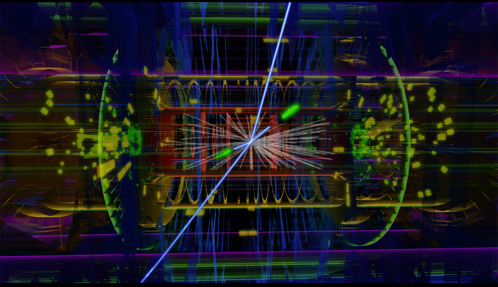

Why Anomaly Searches?
Imagine someone gave you a cake. You are allowed to eat, smell, touch, taste, or do other things to the cake. Your job is to figure out what the cake is made of. For some bizarre reasons, and for the purposes of this analogy, you can actually only 'see' about 5% of the cake. You can't see the rest of the cake, but you know it's there because of how it affects the cake as a whole. Oh, and the cake also seems to be expanding in size. What do you do?
This is the situation High Energy Physicists find themselves in. The observable universe being the cake (admittedly this analogy sounded better in my head). We know about 5% of the observable universe. Roughly 25% is dark matter, and 70% is dark energy. [Why do we think dark matter exists in the universe?]. For the 5% of the universe that we know about, we have a very good theory, the Standard Model of Particle Physics. The Standard Model is a very successful theory, and has been tested to a very high degree of accuracy. But we know that it is not the full picture. We know that there is more to the universe than what we can see.
At the Large Hadron Collider (LHC) at CERN, we smash protons together at very high energies. The protons are made of quarks and gluons. When we smash them together, we create a lot of new particles. We can measure the properties of these particles, and compare them to the predictions of the Standard Model. If we find a discrepancy, we can say that we have found evidence for a new particle. This is really difficult job, because the Standard Model is a very good theory. So far, we have not found any evidence for a new particle. The last missing piece of the Standard Model, the Higgs Boson, was discovered in 2012.
Presumably the new physics, whatever and wherever it is, is very rare. So we need to look at a lot of data to find it. The LHC produces about 40 million collisions per second. We can only record about 1000 of them. So we need to be very careful about which events we record. We need to be able to distinguish between the events that we want to record, and the events that we don't want to record. This is where machine learning comes in.